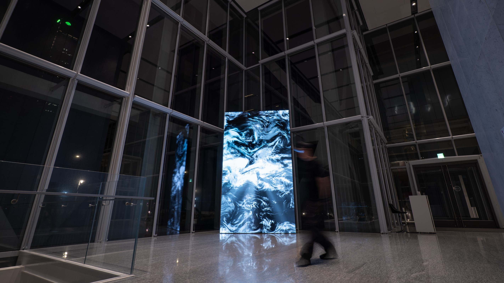
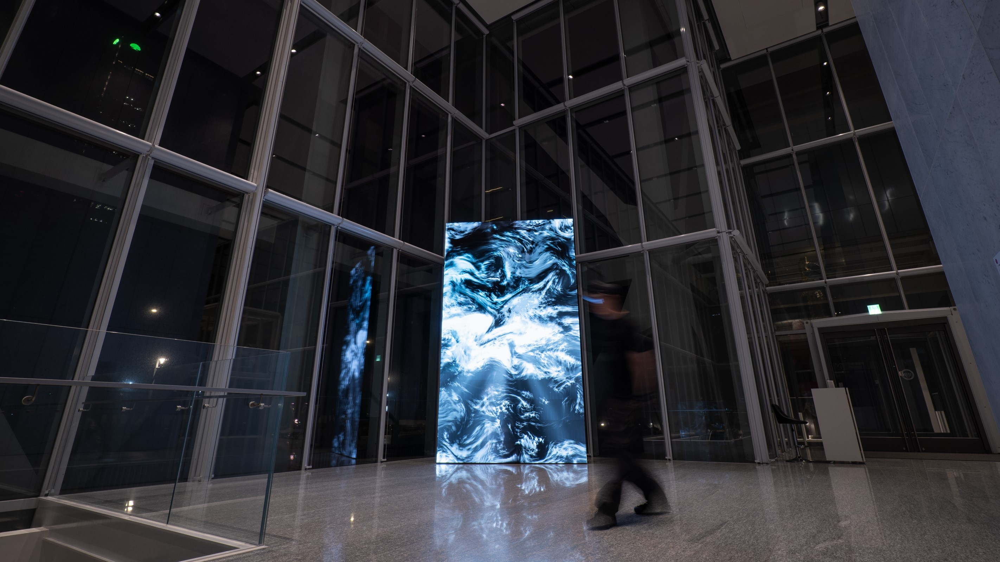
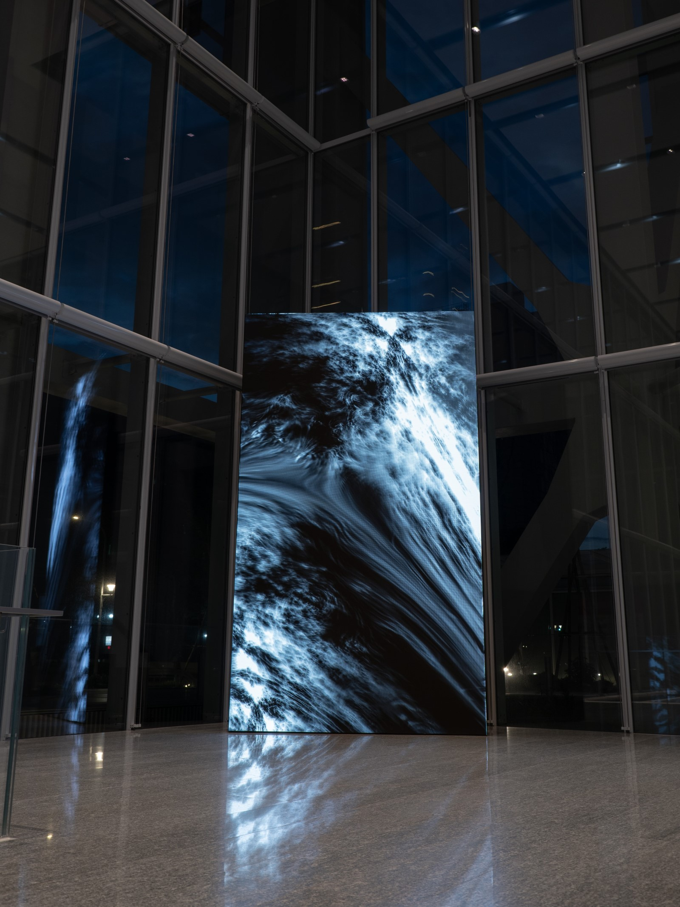
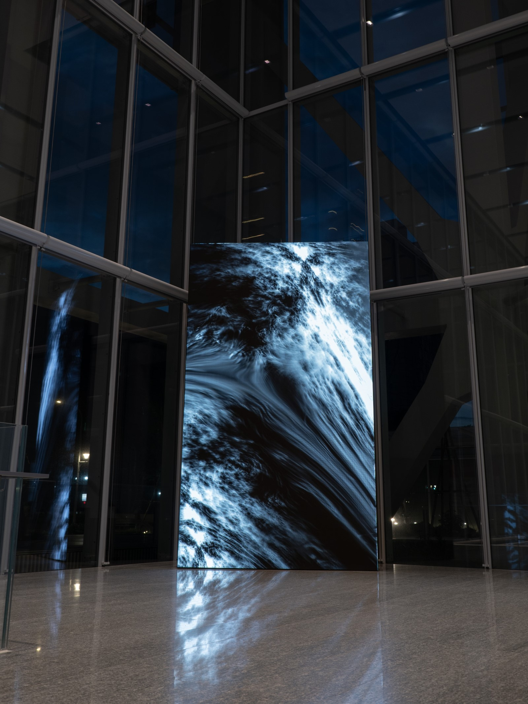

Sedimentary
Audio-Visual Installation
2024
Date:
APR.6 - JUN.23 2024: A25 Fubon
This installation developed from the audio-visual performance Sedimentary, transforming what was originally a time-based performance into a continuously operating spatial condition. Throughout the exhibition period, the work generates evolving variations and forms over time.

 

Using cloudscapes as my base, I build a "fake" reality by stacking and moving layers. This is similar to how sedimentary rocks are formed: different elements settle over time to build a new structure. My work explores the thin line between what is real and what is imagined.
"Sedimentary" here means stacking visual elements to form a picture that looks real but is actually a construct. Much like the way rocks form, my work involves layering and the passage of time. The final result sits between the natural world and the synthetic, inviting the audience to think about the difference between what is authentic and what is created.

 
